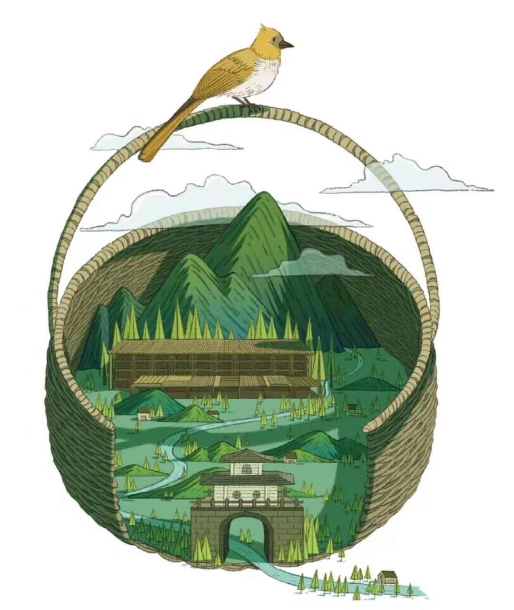
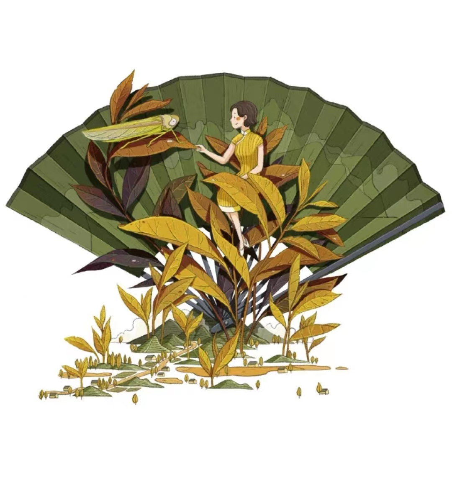
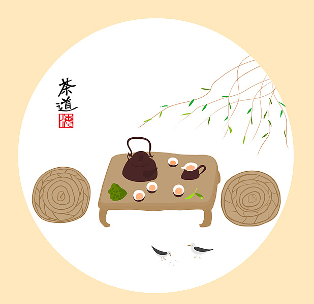

"Frugality" is a traditional Chinese virtue, the tea sage Lu Yu "Tea Sutra" once said: "Tea is suitable for people who are refined and simple virtues".

"Clear", not only in the tea, water, ware, clear, clear, but also require people clear, clear heart. Drinking tea can be described as a clear pleasure on earth.

"Harmony", the philosophical foundation of the Chinese tea, is the core of the tea ritual. It means harmony between heaven and people, and implies complementarity and harmony.

"Quiet", is clear, is empty, and is a vain as a valley, introverted and hidden, insightful. Only quiet, can be in the tea activities in the clear heart and see the nature.
Tea culture means the cultural characteristics formed in the process of tea drinking activities, including tea ceremony, tea virtues, tea spirit, tea association, tea book, tea utensils, tea recipes, tea poems, tea paintings, tea studies, tea stories, tea art and so on.
China is the homeland of tea and the birthplace of tea culture. The discovery and use of tea in China has a history of 4,000 to 5,000 years, and it has flourished and spread around the world. Tea is the national drink of the Chinese people, developed in Shennong, heard in Lu Zhou Gong, flourished in the Tang Dynasty, flourished in the Song Dynasty and became popular in the Ming and Qing Dynasties. Chinese tea culture combines the ideas of Buddhism, Confucianism and Taoism into a single entity, and it is a wonder of Chinese culture! China's tea region is vast, and the division of tea areas takes 3 levels, namely the first level tea area (with the southwest and Jiangnan regions as the table), the second level tea area (with the northwest and north of the river), and the third level tea area (with the south of China as the representative). At the same time, tea has become the most popular, most popular and most beneficial green beverage for physical and mental health in the world. Tea is a blend of heaven, earth and human beings, advocating that "the tea people of the world are one family".
Tea, from its inception is the cure for disease, first for Shennong detoxification, tasting a hundred herbs to create Chinese agriculture and medicine, and then become the human health fairy medicine. The Japanese Zen master Eisai said in his book "Tea for Health", "Tea, the immortal medicine for health, is also a wonderful technique for prolonging age." Chen Zangqi, a famous doctor of the Tang Dynasty, said in his "Collection of Materia Medica" that "tea is the medicine for all diseases".